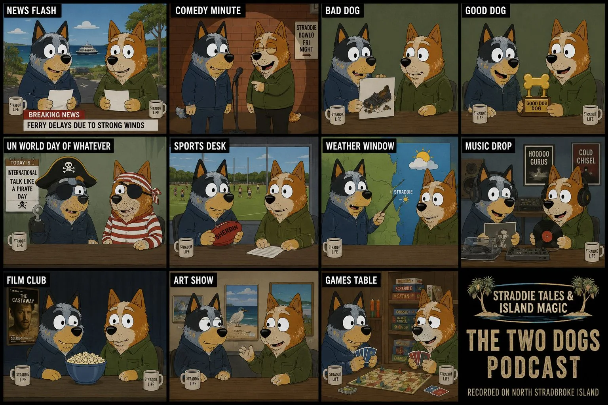

Regular show-bit builder
Export concise `.md` plans for the regular show bits.
Pick a regular show bit, answer the strategic fields, then download or copy the Markdown. Angel controls Blue Dog and current-event material needs a fresh source check on recording day.

Recurring scene
Scene form
Save to segments/ or scenes/